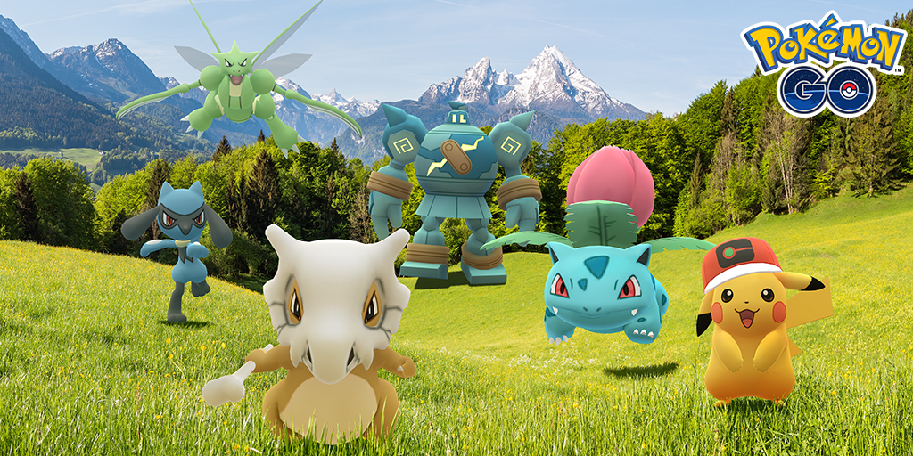
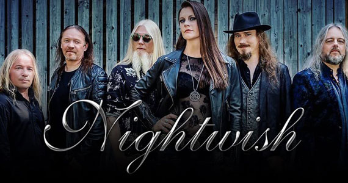
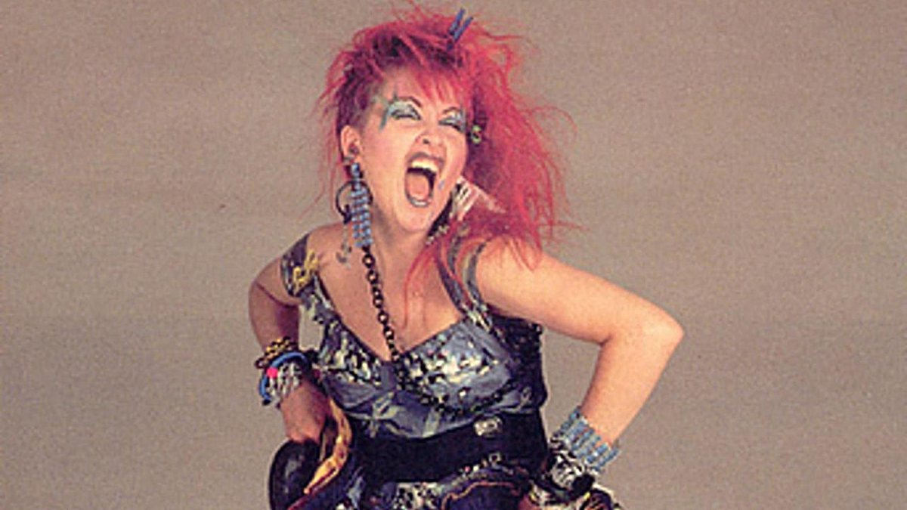
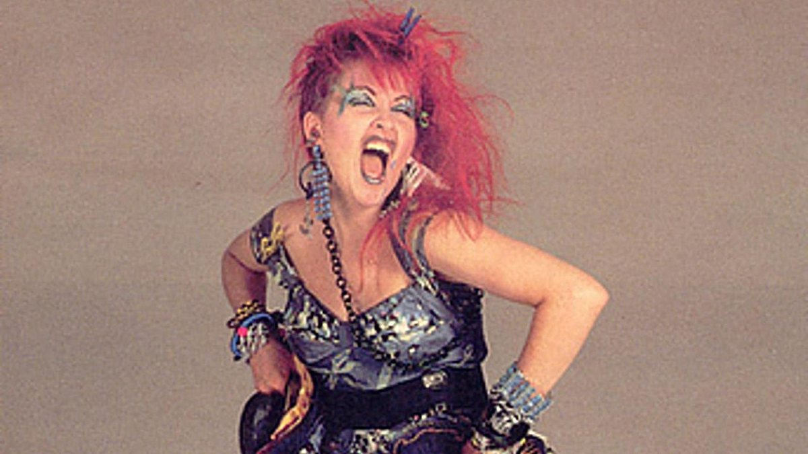

Hobbies
Netflix

Mais tempos escolhendo o que assistir do que de fato assistindo algo...
Ler livros

Minha saga favorita é Harry Potter.
Jogar Pokémon Go e Hearthstone


Saudades de quando eu tinha tempo para jogar...
Ouvir música
 

Meu gosto é muito variado, mas minha banda favorita é Nightwish e minhas cantoras favoritas são Tarja Turunen e Cyndi Lauper. Tenho uma vasta coleção de CDs, tapes e vinis desses artistas.